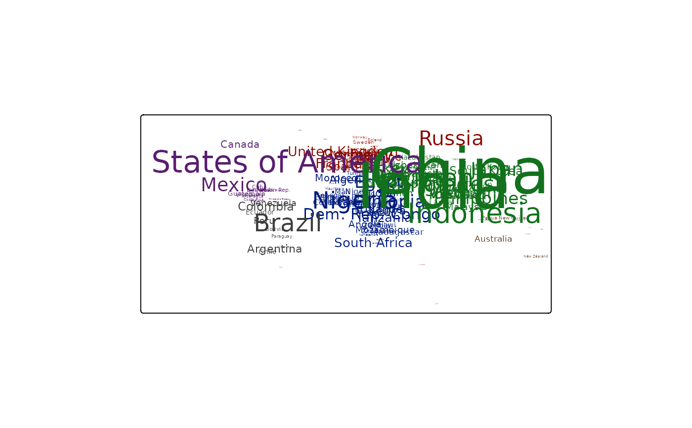
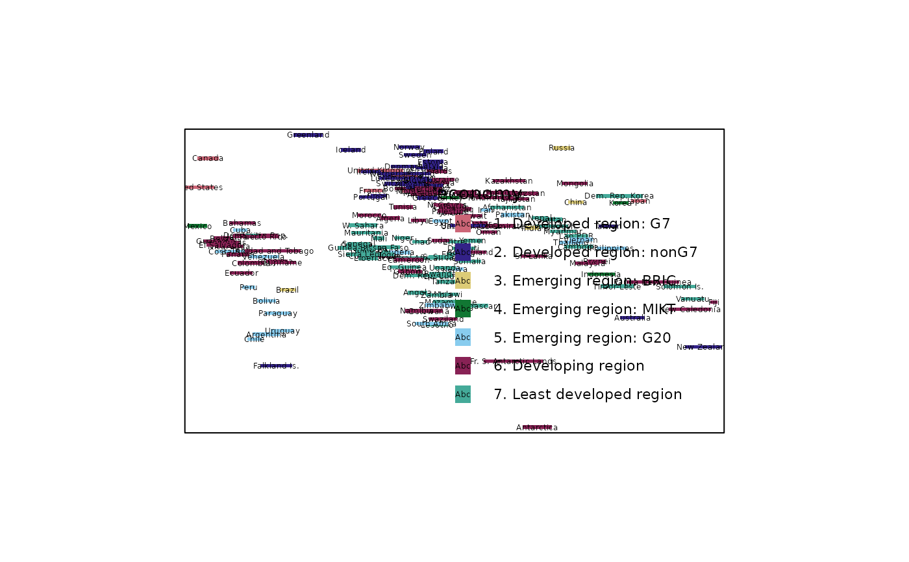

Map layer that draws symbols Supported visual variables are: text
(the text itself) col (color), size (font size), and fontface (font face).
Usage
tm_text(
text = tm_const(),
text.scale = tm_scale(),
text.legend = tm_legend(),
text.chart = tm_chart_none(),
text.free = NA,
size = tm_const(),
size.scale = tm_scale(),
size.legend = tm_legend(),
size.chart = tm_chart_none(),
size.free = NA,
col = tm_const(),
col.scale = tm_scale(),
col.legend = tm_legend(),
col.chart = tm_chart_none(),
col.free = NA,
col_alpha = tm_const(),
col_alpha.scale = tm_scale(),
col_alpha.legend = tm_legend(),
col_alpha.chart = tm_chart_none(),
col_alpha.free = NA,
fontface = tm_const(),
fontface.scale = tm_scale(),
fontface.legend = tm_legend(),
fontface.chart = tm_chart_none(),
fontface.free = NA,
fontfamily = NA,
bgcol = tm_const(),
bgcol.scale = tm_scale(),
bgcol.legend = tm_legend(),
bgcol.chart = tm_chart_none(),
bgcol.free = NA,
bgcol_alpha = tm_const(),
bgcol_alpha.scale = tm_scale(),
bgcol_alpha.legend = tm_legend(),
bgcol_alpha.chart = tm_chart_none(),
bgcol_alpha.free = NA,
xmod = 0,
xmod.scale = tm_scale(),
xmod.legend = tm_legend_hide(),
xmod.chart = tm_chart_none(),
xmod.free = NA,
ymod = 0,
ymod.scale = tm_scale(),
ymod.legend = tm_legend_hide(),
ymod.chart = tm_chart_none(),
ymod.free = NA,
angle = 0,
angle.scale = tm_scale(),
angle.legend = tm_legend_hide(),
angle.chart = tm_chart_none(),
angle.free = NA,
plot.order = tm_plot_order("size", reverse = FALSE),
zindex = NA,
group = NA,
group.control = "check",
options = opt_tm_text(),
...
)
tm_labels(
text = tm_const(),
text.scale = tm_scale(),
text.legend = tm_legend(),
text.chart = tm_chart_none(),
text.free = NA,
size = tm_const(),
size.scale = tm_scale(),
size.legend = tm_legend(),
size.chart = tm_chart_none(),
size.free = NA,
col = tm_const(),
col.scale = tm_scale(),
col.legend = tm_legend(),
col.chart = tm_chart_none(),
col.free = NA,
col_alpha = tm_const(),
col_alpha.scale = tm_scale(),
col_alpha.legend = tm_legend(),
col_alpha.chart = tm_chart_none(),
col_alpha.free = NA,
fontface = tm_const(),
fontface.scale = tm_scale(),
fontface.legend = tm_legend(),
fontface.chart = tm_chart_none(),
fontface.free = NA,
fontfamily = "",
bgcol = tm_const(),
bgcol.scale = tm_scale(),
bgcol.legend = tm_legend(),
bgcol.chart = tm_chart_none(),
bgcol.free = NA,
bgcol_alpha = tm_const(),
bgcol_alpha.scale = tm_scale(),
bgcol_alpha.legend = tm_legend(),
bgcol_alpha.chart = tm_chart_none(),
bgcol_alpha.free = NA,
xmod = 0,
xmod.scale = tm_scale(),
xmod.legend = tm_legend_hide(),
xmod.chart = tm_chart_none(),
xmod.free = NA,
ymod = 0,
ymod.scale = tm_scale(),
ymod.legend = tm_legend_hide(),
ymod.chart = tm_chart_none(),
ymod.free = NA,
angle = 0,
angle.scale = tm_scale(),
angle.legend = tm_legend_hide(),
angle.chart = tm_chart_none(),
angle.free = NA,
plot.order = tm_plot_order("AREA", reverse = FALSE, na.order = "bottom"),
zindex = NA,
group = NA,
group.control = "check",
options = opt_tm_labels(),
...
)
tm_labels_highlighted(
text = tm_const(),
text.scale = tm_scale(),
text.legend = tm_legend(),
text.chart = tm_chart_none(),
text.free = NA,
size = tm_const(),
size.scale = tm_scale(),
size.legend = tm_legend(),
size.chart = tm_chart_none(),
size.free = NA,
col = tm_const(),
col.scale = tm_scale(),
col.legend = tm_legend(),
col.chart = tm_chart_none(),
col.free = NA,
col_alpha = tm_const(),
col_alpha.scale = tm_scale(),
col_alpha.legend = tm_legend(),
col_alpha.chart = tm_chart_none(),
col_alpha.free = NA,
fontface = tm_const(),
fontface.scale = tm_scale(),
fontface.legend = tm_legend(),
fontface.chart = tm_chart_none(),
fontface.free = NA,
fontfamily = "",
bgcol = tm_const(),
bgcol.scale = tm_scale(),
bgcol.legend = tm_legend(),
bgcol.chart = tm_chart_none(),
bgcol.free = NA,
bgcol_alpha = tm_const(),
bgcol_alpha.scale = tm_scale(),
bgcol_alpha.legend = tm_legend(),
bgcol_alpha.chart = tm_chart_none(),
bgcol_alpha.free = NA,
xmod = 0,
xmod.scale = tm_scale(),
xmod.legend = tm_legend_hide(),
xmod.chart = tm_chart_none(),
xmod.free = NA,
ymod = 0,
ymod.scale = tm_scale(),
ymod.legend = tm_legend_hide(),
ymod.chart = tm_chart_none(),
ymod.free = NA,
angle = 0,
angle.scale = tm_scale(),
angle.legend = tm_legend_hide(),
angle.chart = tm_chart_none(),
angle.free = NA,
plot.order = tm_plot_order("AREA", reverse = FALSE, na.order = "bottom"),
zindex = NA,
group = NA,
group.control = "check",
options = opt_tm_labels(),
...
)
opt_tm_text(
points_only = "ifany",
point_per = "feature",
on_surface = FALSE,
shadow = FALSE,
shadow.offset.x = 0.1,
shadow.offset.y = 0.1,
just = "center",
along_lines = FALSE,
bg.padding = 0.4,
clustering = FALSE,
point.label = FALSE,
point.label.gap = 0,
point.label.method = "SANN",
remove_overlap = FALSE
)
opt_tm_labels(
points_only = "ifany",
point_per = "feature",
on_surface = FALSE,
shadow = FALSE,
shadow.offset.x = 0.1,
shadow.offset.y = 0.1,
just = "center",
along_lines = TRUE,
bg.padding = 0.4,
clustering = FALSE,
point.label = NA,
point.label.gap = 0.4,
point.label.method = "SANN",
remove_overlap = FALSE
)Arguments
- text, text.scale, text.legend, text.chart, text.free
Visual variable that determines the text. See details.
- size, size.scale, size.legend, size.chart, size.free
Visual variable that determines the size. See details.
- col, col.scale, col.legend, col.chart, col.free
Visual variable that determines the color. See details.
- col_alpha, col_alpha.scale, col_alpha.legend, col_alpha.chart, col_alpha.free
Visual variable that determines the color transparency. See details.
- fontface, fontface.scale, fontface.legend, fontface.chart, fontface.free
Visual variable that determines the font face. See details.
- fontfamily
The font family. See gpar() for details.
- bgcol, bgcol.scale, bgcol.legend, bgcol.chart, bgcol.free
Visual variable that determines the background color. See Details.
- bgcol_alpha, bgcol_alpha.scale, bgcol_alpha.legend, bgcol_alpha.chart, bgcol_alpha.free
Visual variable that determines the background color transparency. See Details.
- xmod, xmod.scale, xmod.legend, xmod.chart, xmod.free
Transformation variable that determines the x offset. See details.
- ymod, ymod.scale, ymod.legend, ymod.chart, ymod.free
Transformation variable that determines the y offset. See details. the text. See details.
- angle, angle.scale, angle.legend, angle.chart, angle.free
Rotation angle
- plot.order
Specification in which order the spatial features are drawn. See
tm_plot_order()for details.- zindex
Map layers are drawn on top of each other. The
zindexnumbers (one for each map layer) determines the stacking order. By default the map layers are drawn in the order they are called.- group
Name of the group to which this layer belongs. This is only relevant in view mode, where layer groups can be switched (see
group.control)- group.control
In view mode, the group control determines how layer groups can be switched on and off. Options:
"radio"for radio buttons (meaning only one group can be shown),"check"for check boxes (so multiple groups can be shown), and"none"for no control (the group cannot be (de)selected).- options
options passed on to the corresponding
opt_<layer_function>function- ...
to catch deprecated arguments from version < 4.0
- points_only
should only point geometries of the shape object (defined in
tm_shape()) be plotted? By default"ifany", which meansTRUEin case a geometry collection is specified.- point_per
specification of how spatial points are mapped when the geometry is a multi line or a multi polygon. One of
"feature","segment"or"largest". The first generates a spatial point for every feature, the second for every segment (i.e. subfeature), the third only for the largest segment (subfeature). Note that the last two options can be significant slower.- on_surface
In case of polygons, centroids are computed. Should the points be on the surface? If
TRUE, which is slower than the defaultFALSE, centroids outside the surface are replaced with points computed withsf::st_point_on_surface().- shadow
Shadow behind the text. Logical or color.
- shadow.offset.x, shadow.offset.y
Shadow offset in line heights
- just
justification of the text relative to the point coordinates. Either one of the following values:
"left","right","center","bottom", and"top", or a vector of two values where first value specifies horizontal and the second value vertical justification. Besides the mentioned values, also numeric values between 0 and 1 can be used. 0 means left justification for the first value and bottom justification for the second value. Note that in view mode, only one value is used.- along_lines
logical that determines whether labels are rotated along the spatial lines. Only applicable if a spatial lines shape is used.
- bg.padding
The padding of the background in terms of line heights.
- clustering
value that determines whether the text labels are clustered in
"view"mode. One of:TRUE,FALSE, or the output ofmarkerClusterOptions.- point.label
logical that determines whether the labels are placed automatically. By default
FALSEfortm_text, andTRUEfortm_labelsif the number of labels is less than 500 (otherwise it will be too slow).- point.label.gap
numeric that determines the gap between the point and label
- point.label.method
the optimization method, either
"SANN"for simulated annealing (the default) or"GA"for a genetic algorithm.- remove_overlap
logical that determines whether the overlapping labels are removed
Details
The visual variable arguments (e.g. col) can be specified with either a data
variable name (e.g., a spatial vector attribute or a raster layer of the object
specified in tm_shape()), or with a visual value (for col, a color is expected).
See vignette about visual variables.
Multiple values can be specified: in that case facets are created.
These facets can be combined with other faceting data variables, specified with tm_facets().
See vignette about facets.
The
*.scalearguments determine the used scale to map the data values to visual variable values. These can be specified with one of the availabletm_scale_*()functions. The default is specified by the tmap option (tm_options())scales.var. See vignette about scales.The
*.legendarguments determine the used legend, specified withtm_legend(). The default legend and its settings are determined by the tmap options (tm_options())legend.. See vignette about legends.The
*.chartarguments specify additional charts, specified withtm_chart_, e.g.tm_chart_histogram(). See vignette about charts.The
*.freearguments determine whether scales are applied freely across facets, or shared. A logical value is required. They can also be specified with a vector of three logical values; these determine whether scales are applied freely per facet dimension. This is only useful when facets are applied (seetm_facets()). There are maximally three facet dimensions: rows, columns, and pages. This only applies for a facet grid (tm_facets_grid()). For instance,col.free = c(TRUE, FALSE, FALSE)means that for the visual variablecol, each row of facets will have its own scale, and therefore its own legend. For facet wraps and stacks (tm_facets_wrap()andtm_facets_stack()) there is only one facet dimension, so the*.freeargument requires only one logical value.
Examples
tm_shape(World, bbox = World) +
tm_text("name", size="pop_est", col="continent",
col.scale = tm_scale_categorical(values = "seaborn.dark"),
col.legend = tm_legend_hide(),
size.scale = tm_scale_continuous(values.scale = 4),
size.legend = tm_legend_hide())

metro$upside_down = ifelse(sf::st_coordinates(metro)[,2] < 0, 180, 0)
tm_shape(metro) +
tm_text(text = "name", size = "pop2020",
angle = "upside_down", size.legend = tm_legend_hide(),
col = "upside_down",
col.scale = tm_scale_categorical(values = c("#9900BB", "#228822")),
col.legend = tm_legend_hide()) +
tm_title_out("Which Hemisphere?", position = tm_pos_out("center", "top", pos.v = "bottom"))
